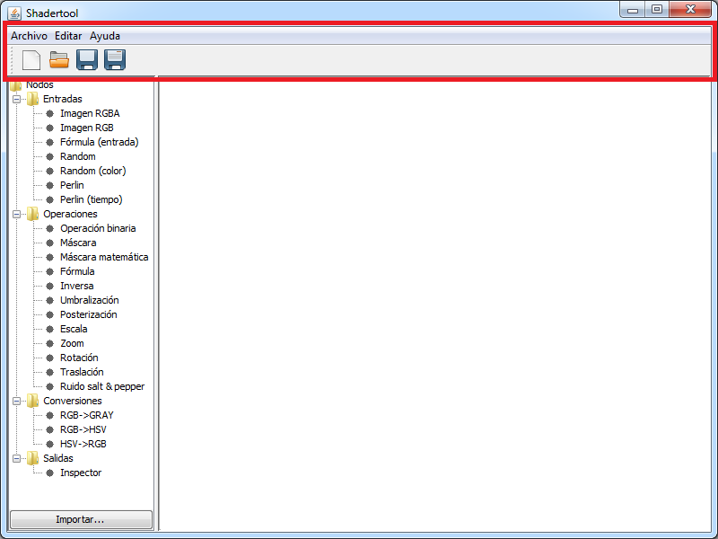

Menú y barra de herramientas
En el menú y la barra de herramientas se realizan todas las operaciones habituales de edición: abrir, nuevo, guardar...

Crear un nuevo archivo
Para crear un nuevo archivo hay que abrir el menú "Archivo" y pulsar el botón de "Nuevo" () o pulsar el botón
"Nuevo" () en la barra de herramientas.
Abrir un archivo
Para abrir un archivo hay que abrir el menú "Archivo" y pulsar el botón de "Abrir" () o pulsar el botón
"Abrir" ( ) en la barra de herramientas.
) en la barra de herramientas.
Guardar un archivo
Para guardar un archivo hay que abrir el menú "Archivo" y pulsar el botón de "Guardar" () o pulsar el botón
"Guardar" () en la barra de herramientas.
Para guardar un archivo con un nombre diferente hay que abrir el menú "Archivo" y pulsar el botón de "Guardar como" ()
o pulsar el botón "Guardar como" ( ) en la barra de herramientas.
) en la barra de herramientas.
Otras operaciones
Otras de las operaciones que se pueden realizar son reorganizar el grafo de forma automática (en el menú "Editar") o abrir este manual.